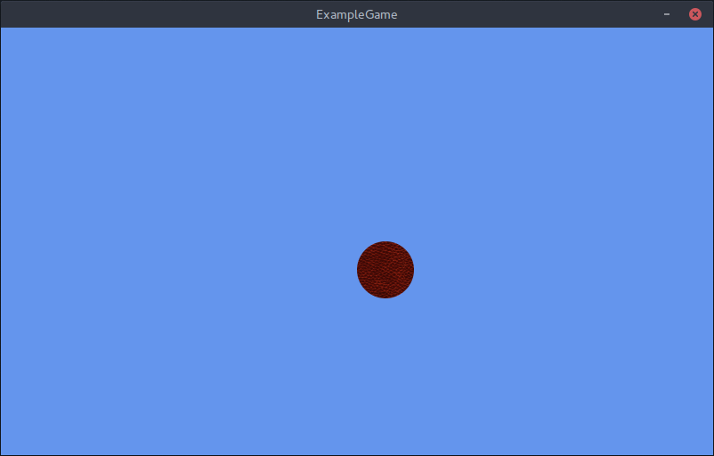
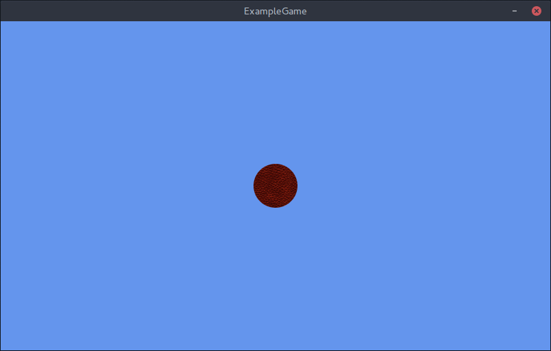

Adding Basic Code
This file will go over adding basic logic to your game. Do note that this file continues where Adding Content tutorial left off.
First of all we need to add few new variables, one for position, and one for speed.
public class Game1 : Game
{
Texture2D ballTexture;
Vector2 ballPosition;
float ballSpeed;
Next let's initialize them. Find the Initialize method and add the following lines.
// TODO: Add your initialization logic here
ballPosition = new Vector2(graphics.PreferredBackBufferWidth / 2,
graphics.PreferredBackBufferHeight / 2);
ballSpeed = 100f;
base.Initialize();
With this we are putting our ball starting position to the center of the screen. Last thing we need to do is modify the position that the ball is getting drawn to. Find Draw method and modify the Draw call to:
spriteBatch.Draw(ballTexture, ballPosition, Color.White);
Now run the game.

As you can see the ball doesn't seem quite centered yet. This is happening because MonoGame uses (0, 0) as the origin point for drawing by default. We can modify this by doing the following:
spriteBatch.Draw(
ballTexture,
ballPosition,
null,
Color.White,
0f,
new Vector2(ballTexture.Width / 2, ballTexture.Height / 2),
Vector2.One,
SpriteEffects.None,
0f
);
With this we are setting the origin to the center of the image. Now the image will get drawn to the center of the screen.

Next let's setup some movement. Find the Update method and add:
// TODO: Add your update logic here
var kstate = Keyboard.GetState();
if (kstate.IsKeyDown(Keys.Up))
ballPosition.Y -= ballSpeed * (float)gameTime.ElapsedGameTime.TotalSeconds;
if(kstate.IsKeyDown(Keys.Down))
ballPosition.Y += ballSpeed * (float)gameTime.ElapsedGameTime.TotalSeconds;
if (kstate.IsKeyDown(Keys.Left))
ballPosition.X -= ballSpeed * (float)gameTime.ElapsedGameTime.TotalSeconds;
if(kstate.IsKeyDown(Keys.Right))
ballPosition.X += ballSpeed * (float)gameTime.ElapsedGameTime.TotalSeconds;
base.Update(gameTime);
Let's discuss the code a bit.
With this we are getting the current keyboard state and just putting it into a variable.
var kstate = Keyboard.GetState();
Next is just a simple check to see if the Up arrow key is pressed.
if (kstate.IsKeyDown(Keys.Up))
And last is a simple code for moving the ball by ballSpeed. The reason why ballSpeed is getting multiplied by gameTime.ElapsedGameTime.TotalSeconds is because Update is not usually fixed, that is the time between update calls is not the same, so in order to get smooth movement we multiple speed by the time since the last update method was called.
ballPosition.Y -= ballSpeed * (float)gameTime.ElapsedGameTime.TotalSeconds;
The last 2 code parts repeat for Down, Left and Right arrow keys.
Run the game and you should be able to move the ball with the arrow keys. You will probably notice that you can get out of the window, so let's make it so that the ball can't escape the window. We will do this by setting bounds onto the ballPosition after it has already been moved.
if(kstate.IsKeyDown(Keys.Right))
ballPosition.X += ballSpeed * (float)gameTime.ElapsedGameTime.TotalSeconds;
ballPosition.X = Math.Min(Math.Max(ballTexture.Width / 2, ballPosition.X), graphics.PreferredBackBufferWidth - ballTexture.Width / 2);
ballPosition.Y = Math.Min(Math.Max(ballTexture.Height / 2, ballPosition.Y), graphics.PreferredBackBufferHeight - ballTexture.Height / 2);
base.Update(gameTime);
Now run the game and the ball won't be able to escape window bounds anymore.
Happy Coding ^^